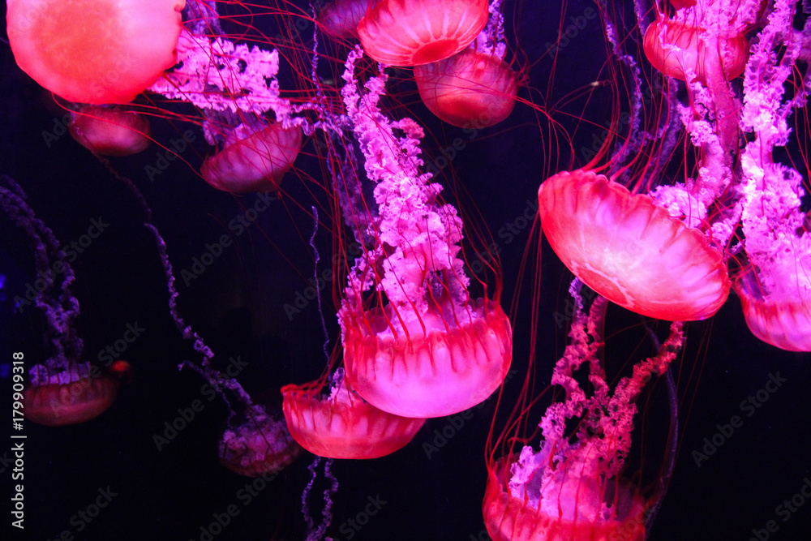

Color
Un sitio pequeño para algo grande
A ver, lo del PDF y la playlist estaba guay, pero para algo soy informático, ¿no? Este es un espacio dedicado a nuestro camino, nuestra playlist y nuestros recuerdos.